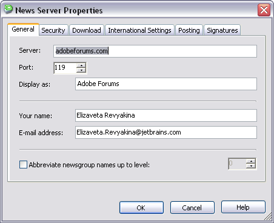
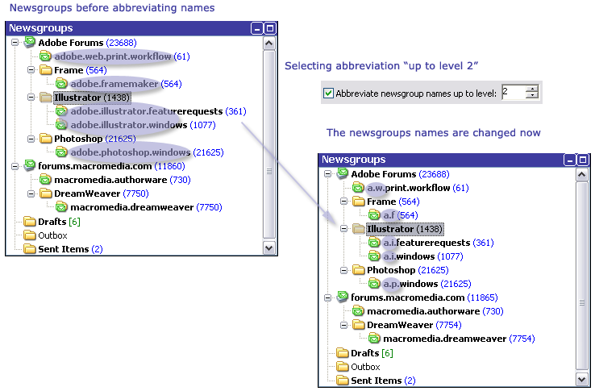

News Server Properties/Add News Server Dialog
This dialog enables you to configure an Internet news server for use with Omea ReaderOmea Pro. The dialog appears with a different title depending on how you invoke it, although it always contains the same data fields and options.
The dialog is invoked from the Manage Newsgroups dialog. When invoked with the Add button, the dialog title is Add News Server. When invoked with the Properties button, the title is News Server Properties. The slight differences in functionality are noted later in this topic.

Add News Server dialog

News Server Properties dialog
Using these dialogs you can now set different configuration for each news server.
Description of the Tabs and Actions with Them
Both variants of the dialog have the following data fields and options, with behavioral differences as noted:
General Tab
Server
Contains the Internet address of the news server. News server addresses typically have a format like: news.domain-name.ext
In the Add News Server form, this field is empty and you must enter the address of the news server you want to add.
In the News Server Properties form, this field contains the address of the currently selected server in the News Servers list. You can modify the address if you wish.
If you want to remove the currently selected server from the News Servers list, you should use the Remove button in the Manage Newsgroups dialog, rather than deleting the newsgroup server address from this field in this dialog.
Port
This is the port number of the host computer for the news server specified in Server. The default port number is 119, which is typically used by many news server hosts.
Display As
Here you can specify how you want the news server specified in Server
to appear in the Newsgroups panel of the News resource tab. For example, for
the server news.jetbrains.com you might enter JetBrains News
Server.
Your Name
Enter your name as you want it to appear in any newsgroup articles you post or reply to in newsgroups hosted on the news server specified in Server. By default this field contains the name configured for MS Outlook e-mail.
E-mail Address
Enter the e-mail address you want to use in conjunction with newsgroups on the news server specified in Server. By default, this is the e-mail address of the first e-mail account found in MS Outlook.
Abbreviate Newsgroup Names up to Level Check Box
You can change the appearance of the news groups names if you check this option and select the abbreviation level using the spinner. For example, if you select "1", then only the first word in the newsgroup name will be abbreviated, if "2", the first two words in the newsgroup name will be abbreviated.

Abbreviating the newsgroups names
Security Tab
Authentication Required Check Box
If the news server specified in Server requires authentication for access, check this box. Otherwise, leave it unchecked.
User Name
This field is enabled for editing only when Authentication Required is checked.
Enter your user name on the news server specified in Server.
Password
This field is enabled for editing only when Authentication Required is checked.
Enter your password on the news server specified in Server.
This Server Requires Secure Connection (SSL) Check Box
You can get the information concerning whether you have to set this option from the administrator of the news server you want to subscribe to.
Download Tab
Download not More than nnn Articles from a Group at a Time
This option controls how many articles Omea Reader Omea Pro downloads from each newsgroup each time it downloads. Default setting is 300, which is fairly standard for newsgroup readers.
Deliver News on Startup
When checked, Omea ReaderOmea Pro will download new articles from all newsgroups each time you start it. If your have many newsgroups that have a lot of activity, checking this option might noticeably lengthen the amount of time needed to start Omea ReaderOmea Pro .
Deliver News Every n Minutes
This option controls how often Omea Reader Omea Pro checks newsgroups for new articles and downloads any new ones. When checked, Omea will check for and download new articles according to the number of minutes set in the number box. When not checked, Omea ReaderOmea Pro only checks for new articles when it starts up.
Mark Articles from Me as Read
When this option is checked, any newsgroup articles that you posted are automatically marked as read after they had been downloaded.
On Deliver News, Download Only Article Headers
When checked, Omea will download only the news articles headers when it delivers news; the body of the article will be downloaded when you select it in the Items List.
Automatically Download Article When Viewing in the Preview Pane
This option is available when On Deliver News, download only article headers option is checked.
When checked, news articles will be downloaded only when you:
- Select the article in the Items List.
The article will be displayed in the Preview pane. - Navigate to the "Click to download an article" link.
The article body will be downloaded.
When this option is enabled, you will be able to significantly lower your bandwidth because now the article will be downloaded only when you explicitly tell Omea to download the article body.
International Settings Tab
This group provides options to control display of news articles in different languages.
Default Encoding
Enables you to select the default encoding for newsgroup articles read in Omea ReaderOmea Pro. Choose a value from the drop down list of supported encodings. The default encoding is iso-8859-1.
Posting Tab
This group provides options to control formatting of newsgroup posts that you write and upload from Omea ReaderOmea Pro.
Message Format
Enables you to select the default format for newsgroup posts you create in Omea Reader Omea Pro . The options are:
- UUEncode
- MIME
Encode text with
If you select the MIME option, this drop-down list is enabled and you can choose among the following MIME text encodings (or None):
- Quoted-Printable
- Base64
Allow 8-bit Characters in Headers Check Box
When checked, 8-bit characters are allowed in newsgroup headers. Some non-Latin alphabets may use such characters. Unless this is an issue for you, you can leave this option in the default state: unchecked.
On Send, Put Articles in Outbox Rather Than Post Immediately
If the option is checked, uploaded articles will live in Outbox folder until you manually send them via the Send/Receive toolbar button on the News tab.
Signatures Tab
Include Signature in Outgoing Messages Check Box
Check this box if you want to use a signature when creating new posts and replying the news posts. When this box is checked, the space under this option becomes available for creating and editing the signature and you can change Signature in Replies setting.
You can create and use different signatures for different news servers and modify them any time later.
Signature in Replies
Allows you to optionally include your signature when you reply to the newsgroups messages and select the position of your signature in the reply form.
You can create different signatures for different news servers.
OK Button
Accepts/applies changes to the fields and options, and closes the dialog. This button is disabled if the Server field is empty.
Cancel Button
Discards any changes you may have made in the fields and options, and closes the dialog.
Customizing the Properties of Several News Servers
You can now easily change the options of several news servers which you are subscribed to in Omea ReaderOmea Pro. To do so, press and hold down Ctrl button and select the news servers for which you want to customize their settings. Then right-click and select Properties.
Make necessary changes in the News Server Properties dialog which opens and click OK button to save changes. The new settings will be applied to all selected news servers.
See also: